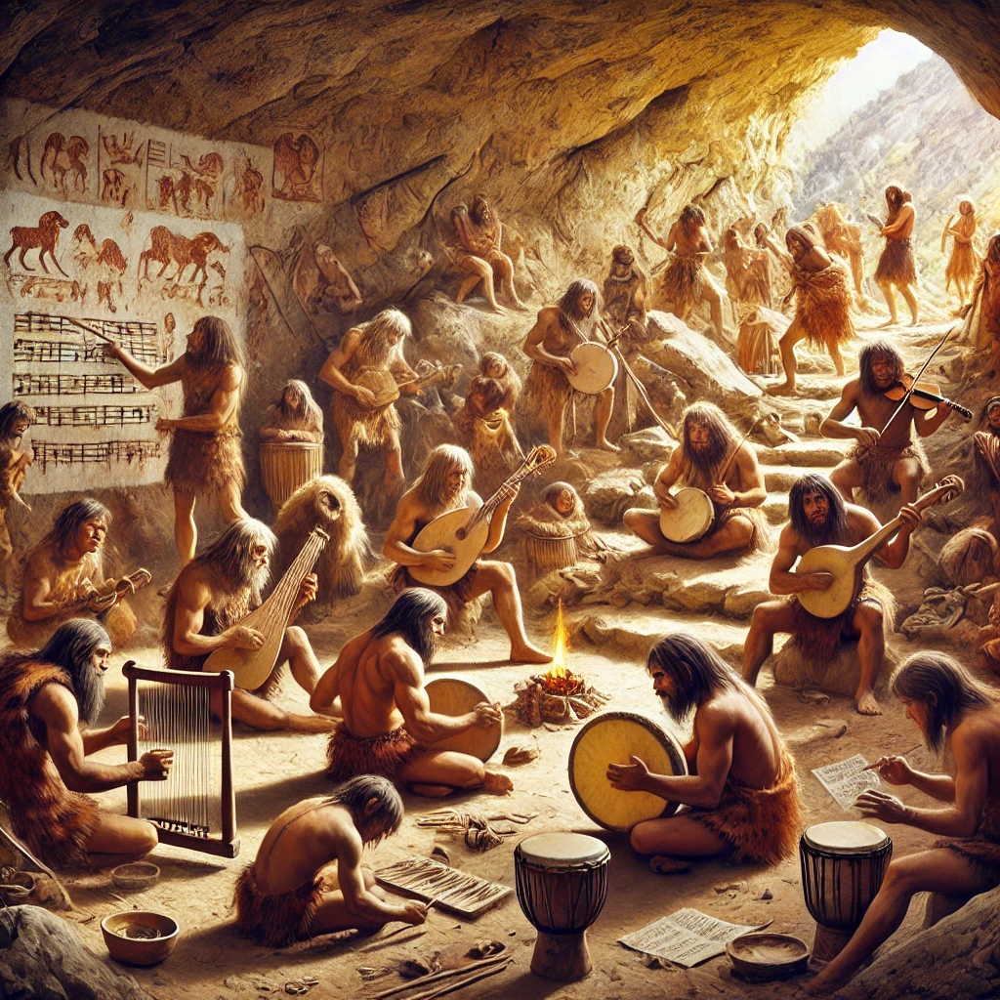
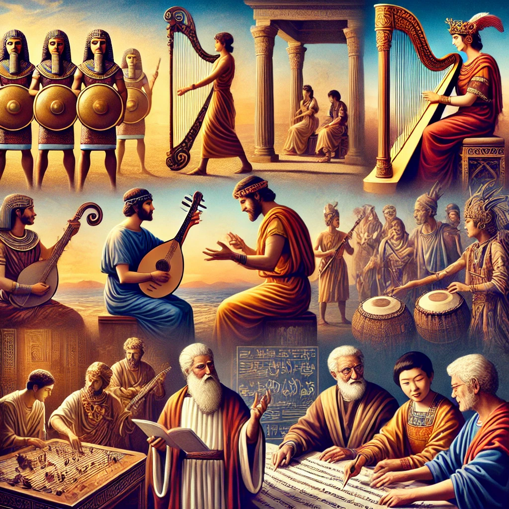
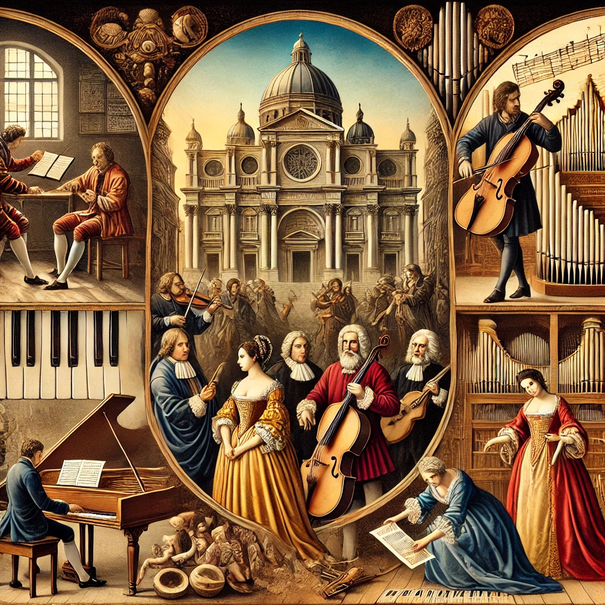
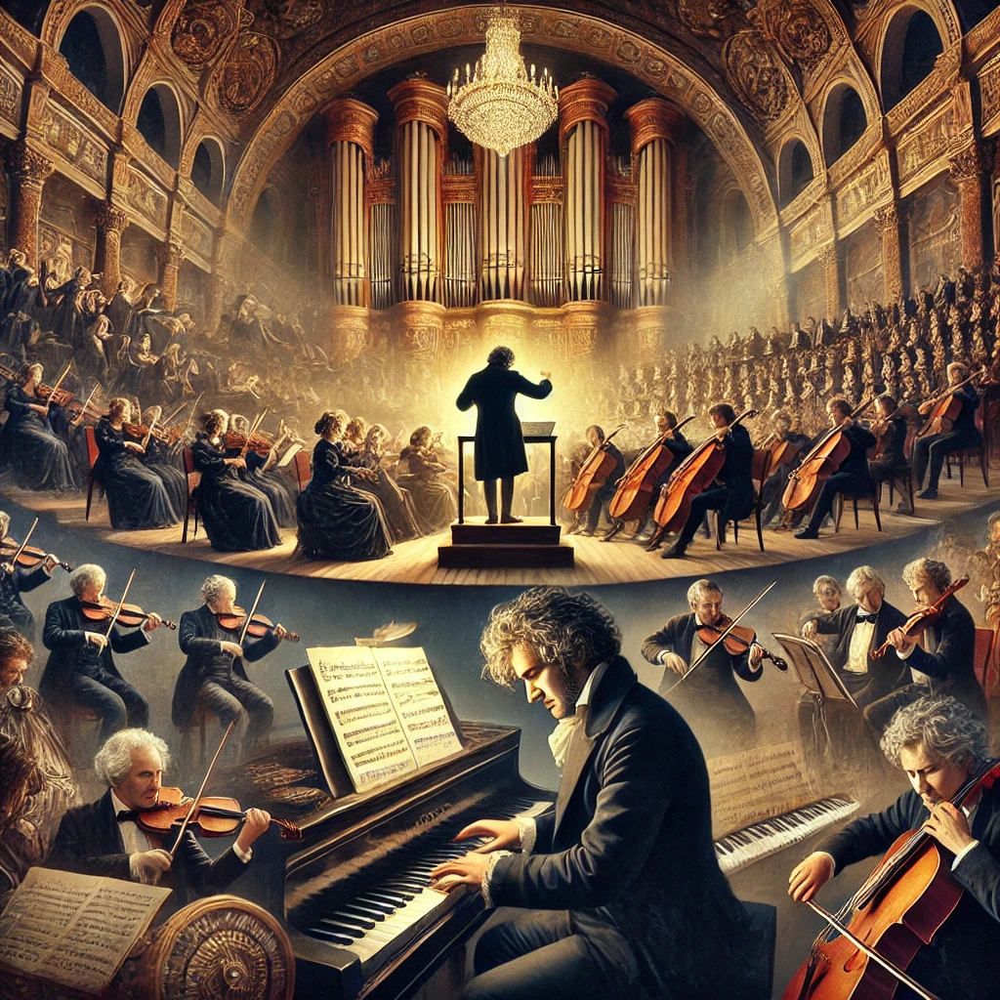
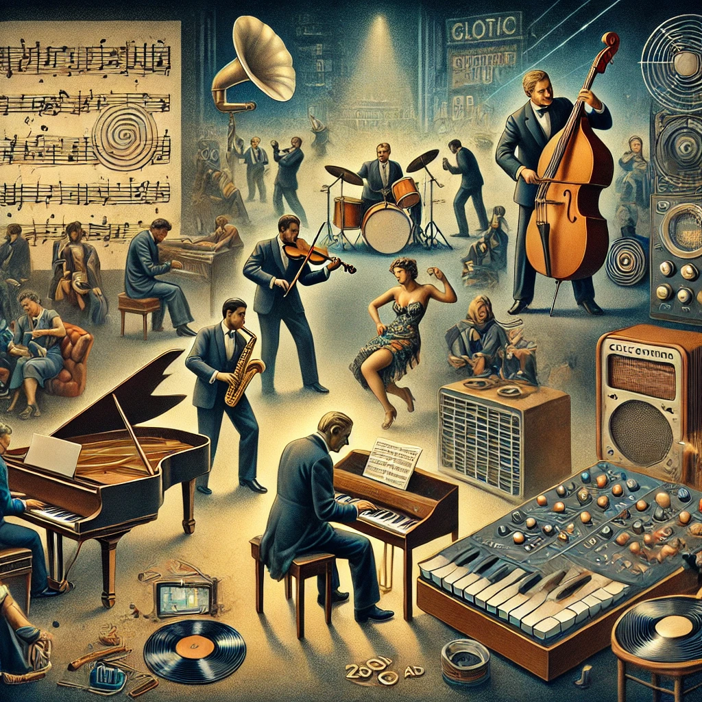

1. Wczesne formy komunikacji dźwiękowej (1 milion - 100 tysięcy lat temu)
2. Pierwotne formy muzyczne (100 tysięcy - 40 tysięcy lat temu)

3. Muzyka w paleolicie (40 tysięcy - 10 tysięcy lat temu)
4. Muzyka w mezolicie i neolicie (10 tysięcy - 5 tysięcy lat temu)

5. Wczesne cywilizacje i muzyka (5 tysięcy - 2 tysiące lat temu)
6. Muzyka w średniowieczu (500 - 1400 n.e.)

7. Renesans i barok (1400 - 1750 n.e.)

8. Klasycyzm i romantyzm (1750 - 1900 n.e.)

9. XX wiek - epoka rewolucji (1900 - 2000 n.e.)
10. Muzyka współczesna i przyszłość (2000 - współczesność)